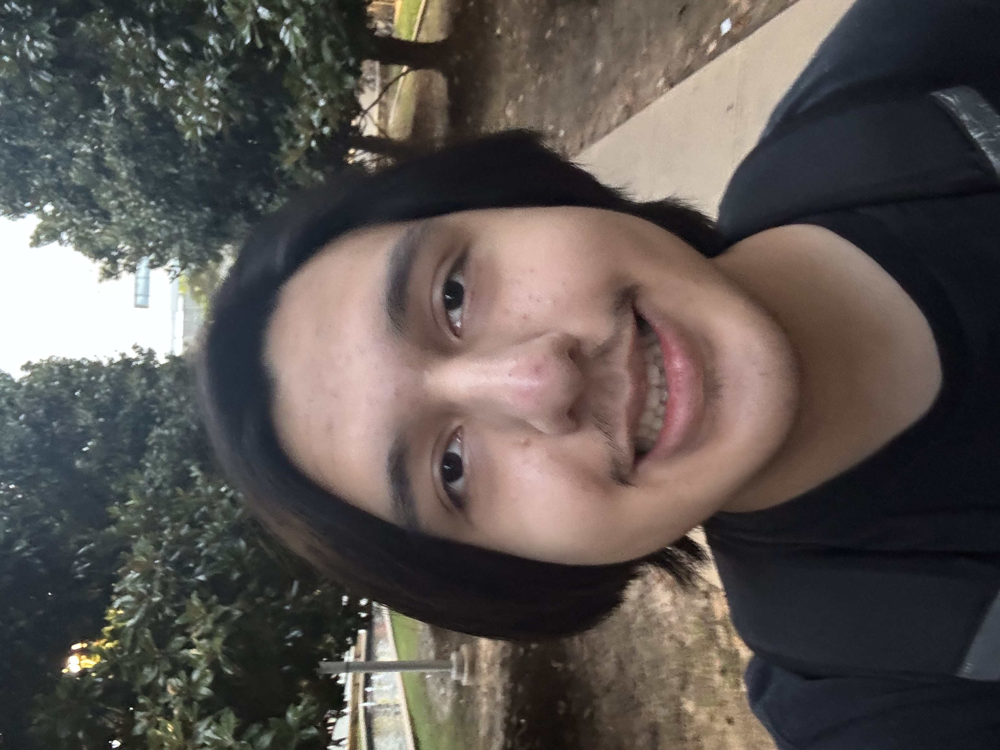

Angel Bryan Magana

My name is Angel Bryan Magana, and I am an aspiring graphic designer currently enrolled at The University of Texas at Dallas. I am currently a sophmore at UTD and I am working towards obtaining my Bachlor's Degree of Media, Arts, and Design.
My Education
- Harmony Science Academy: I previously attended a K-12 academy where I ended up graduating with my high school diploma in a graduating class of 80 people.
- Dallas College: After high school, I took some courses at Dallas College over the summer of 2025 and 2026 for my Associates of Arts. I am projected to graduate with the previously mentioned Associates degree in 2027.
- University of Texas at Dallas: I am currently in my 2nd year of UTD and am studying for my Bachlor's Degree of Media, Arts, and Design. Once I graduate with my Bachlor's I hope to work as a graphic designer in either freelance oppertunities, or with a corporation.
My Skills
- I am certified in the following Adobe programs: Adobe Illustrator, Adobe Photoshop, and Adobe Premiere Pro
- I am bilingual in both English and Spanish, and am currently learning how to speak Japenese.
- I am a quick learner, responsible, and dependable.
- I have experience in photography and photo editing.
My Previous Work Experience
- I worked as an Electrical Assistant during the summer of 2026.
- I am a Photo Editor for XOXO Photos By Bridget, a photography bussiness run by my older sister.
- I briefly worked as a Substitue Teacher and Wedding Setter.